|
|
|
|
|
|
АФАНАСЬЕВ В. 19 стр Введение В 1982 г. мы
начали исследование с попытки решить конкретную задачу — создать
экономическую модель на основе шахмат. Постепенно круг проблем расширялся,
и в итоге неизбежно целью нашего исследования стал поиск решений, позволяющих
доказать объективную природу шахмат, их глобальный характер и прикладное
значение. С 1982 по 1996 гг. нами получены следующие результаты: дано
определение шахмат как логической системы, раскрыт механизм физического
рождения фигур, определены объективные оценки массы и энергии, рассмотрен механизм
игры с точки зрения энергетики системы, исследован качественный скачок в
развитии шахмат и создан алгоритм его перевода на компьютерный язык, создана
основа экономической модели на основе шахмат, предложена постановка конкретной
задачи, которую становится возможным моделировать с их помощью. В рамках
небольшой статьи мы постараемся вкратце изложить несколько ключевых положений
нашего исследования, к которым относится: - ОПРЕДЕЛЕНИЕ шахмат как логической системы; -
РОЖДЕНИЕ фигур, их массы и энергии; - СОДЕРЖАНИЕ
игры на макроуровне. Следует
учитывать, что эти вопросы здесь даются схематично, оторвано от разработанной
нами целостной концепции, и могут быть представлены лишь как обзорный материал.
Впрочем, такой вариант публикации имеет свои преимущества: ложное ощущение
несовершенства представленных идей вызовет у оппонента страстное желание тут же
опровергнуть наши «измышления». Для этого необходимо создать свою систему доказательств,
осуществить напряженную и в любом случае полезную для головы работу... В итоге,
мы надеемся увидеть «воина» в числе своих сторонников. Напротив, тем читателям,
которые ведут свои исследования в области шахматной теории и «кожей» чувствуют
глобальный характер этой «игры», уже не требуется предоставления детальных
доказательств того, что они сейчас прочтут. (А я против опускания
доказательств. С верой без доказательств – это в другую ипархию! – Т.В.) Для
них это будет сжатая информация, дополняющая их собственные идеи. Надеемся,
наша разработка окажется и в этом случае полезной. Итак, в
добрый путь. Да поможет нам Б-г...(Вот и приехали? – Т.В.) 1. Стандарт определения С точки
зрения логики шахматы универсальны, поскольку в них: —
ПРИТЯЖЕНИЕ и ОТТАЛКИВАНИЕ суть два простых момента качества; — на
поверхности явлений данное качество удерживается собственным ПРИЗНАКОМ —
ВОЗМОЖНОСТЬЮ взять фигуру; — притяжение
УТВЕРЖДАЕТ эту возможность, отталкивание ОТРИЦАЕТ её; — через
одномоментное утверждение-отрицание возможности взять фигуру пролегает ГРАНИЦА всей
системы шахмат и каждого её элемента; — каждый
элемент проявляет себя КОНКРЕТНО — через свой способ движения по пространству
взаимодействия; — в момент
конкретного движения вскрывается граница, наполняющий её признак качества, и
далее — само качество, которое лишь после этого переходит в КОЛИЧЕСТВО
движения; — в процессе
перехода качества в количество реализуется СВОЙСТВО фигуры — её возможность
ДАВЛЕНИЯ на пространство взаимодействия; — степень
давления на пространство есть уже качественно-определенное количество, иначе —
МЕРА; — по мере
давления на пространство притяжение и отталкивание переходят в
ПРОТИВОПОЛОЖНОСТЬ защиты и нападения; — притяжение
и отталкивание в форме защиты и нападения есть внутренний ИСТОЧНИК развития
шахмат; — в момент
наполнения себя источником развития возможность взять фигуру перерастает в
НЕОБХОДИМОСТЬ; —
необходимость взять фигуру становится целью движения, а необходимость поставить
«мат» королю — сверхцелью развития; — король
становится сверхфигурой, рождается иерархия целей и структура элементов,
система становится реальной; — имея
собственное качество, признак, количество, границу, свойство, меру, источник и
сверхцель развития, шахматы выступают перед нами ОБЪЕКТИВНОЙ системой, имеющей
свои внутренние законы, которые мы способны познавать, но отменить УЖЕ не в
силах! Таким
образом, ШАХМАТЫ являются сверхдревним продуктом Нашей цивилизации, — но лишь
настолько, насколько таким продуктом выступает круг, линия или понятие о Б-ге.
Но — мог ли не появиться круг? Так же не могли не появиться шахматы. Они
заключают в себе ЯДРО ВСЕЛЕННОЙ - систему её исходных АБСТРАКТНЫХ ЛОГИЧЕСКИХ
КОНСТРУКЦИЙ, так или иначе живущих в любой форме материи в виде КОНКРЕТНЫХ
«качество-количество», «свойство-признак», «граница», «источник», цель»,
«противоречие» и т.д. 2 Представленное
выше определение рассматривает шахматы как саморазвитие сил притяжения и
отталкивания. Из данных сил объективно зарождаются шахматные фигуры, законы их
способов передвижения, пространство взаимодействия, исходная позиция, и что
самое важное — точные количественные оценки массы и энергии данной системы. 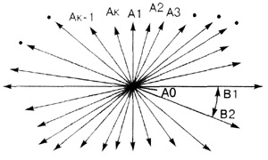
Итак, точка
на рис. 1 синтезирует в себе логику и пространственную организацию притяжения и
отталкивания. Такое пространство пока является логическим, но уже вырабатывает
присущие ему атрибуты, т.к. в его рамках начинает формироваться
бесконечное-конечное, протяженность и направление, плоскость и объём, а так же
иные характеристики, присущие конкретному. В данной
точке притяжение и отталкивание продолжают нарастать (см. рис. 2а—г). Через
миллионы лет, а может, через одну логическую миллисекунду, происходит первый
протоскачок — силы притяжения и отталкивания самих сил притяжения и
отталкивания (В1, В2 на рис.1) берут верх в своём собственном нарастании.
Первородная точка АО разрывается на свои же первородные копии — А1—А4. Которые,
впрочем, не улетают в «никуда», но остаются частью прежнего процесса —
нарастания притяжения и отталкивания. Появляются точки, но ещё нет их
количества, поскольку нет конечности. Это потом система «узнает», что «их было
четверо»... Здесь она занята другим делом — систематизацией направления сил.
Они впервые становятся конкретными (см. рис. 3). Позже человек даст этим силам
свои смешные имена — типа «слон», «ладья», «ферзь». 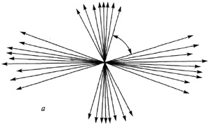 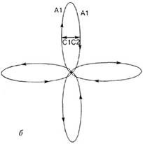 Cl, C2 — притяжение и отталкивание
«изнутри» превысили силу притяжения и отталкивания «извне» 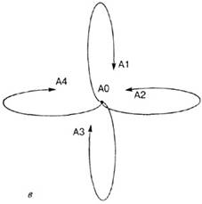 «Отрицание отрицания» — появляются точки 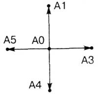 Рис 2. 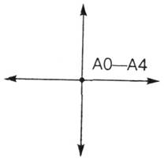 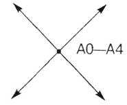 Данные
притяжение и отталкивание выходят из первородной АО и из ее копий А1—А4 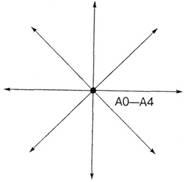 «ферзь» Рис. 3.
Появление единичных связей типа «ладья», «слон», «ферзь». Мы должны
иметь в виду, что система порождает свой опыт методом проб и ошибок. Она похожа
на трёхлетнего младенца, собирающего конструктор из простейших деталей. Что
выйдет - то будет. Единственным упражнением её анализа является отделение
старого от нового. Новое – это естественный критерий опыта. Породив ладью,
система, после долгих упражнений, рано или поздно находит единственно иное
новое — слона. В нём есть диагональ, т. е. то иное, которое РАВНОМЕРНО
удалено-отделено от вертикали (горизонтали). Она ещё не знает, где её «север»
или «юг», но 45 градусов в повороте позволяют уже удалиться от вертикали
настолько, насколько горизонтальным будет положение. Система аккуратна, её
действия бессмысленны (да, это заметно – Т.В.), но абсолютно взвешены. Накопив опыт
рождения единичного, система не успевает дойти до появления «восьмерок» и
«тетраэдров», т. к. её целью выступает получение ПОЛНОГО НОВОГО ОПЫТА. В этом
случае новым выступает не поиск всё новых геометрических форм, а качественно
новое состояние точки. Отсюда, получив силу притяжения и отталкивания под
названием «ферзь», наша система порождает «шаг», формируя силу, которую мы
знаем в виде «короля» (см. рис. 4). (Господи,
какая виртуозная схоластика. Как тонки замечания о том, чего никто никогда не
видел! – Т.В.) В данном
короле система ещё ничего не видит из того, что видим мы. (Всё-таки кое-чо
видите? Ну расскажите…. – Т.В.) Главное для неё это то, что в отличие от ферзя,
уходящего в бесконечность, король конечен, — подчеркивая конечность опыта
накопления разнообразия единичных однородных сил (слон, ладья, ферзь).
Расстояния такой шаг ещё не имеет, это может быть и один парсек, и один микрон.
Здесь появляется логическое расстояние, отделяющее один полный опыт от другого
(первый шаг от следующего). Однако,
король на данной стадии формирования ещё не способен выбрать одно из имеющихся
в его запасе направлений. Он движется сразу во всех направлениях. Поэтому, единичное
не становится конкретным. Оно абстрактно. Опыт не завершен. Шаг короля не
позволяет идентифицировать КАЖДОЕ направление его движения. Только все сразу.
Наступило время постигнуть новое — право ВЫБОРА ОДНОЙ линии из всего комплекта,
чтобы постигнуть конечное-единичное. Это — цель нового опыта. Теперь система
стала выбирать одно направление через слияние всех направлений движения короля,
и родился «конь» (см. рис. 5). Два принципиально отличных направления движения
короля захватываются конем в один его шаг. При этом, он не попадает в уже
имеющееся «прокрустово ложе» плоскости движения и, достигая точки «А02» из
точки «АО» по кратчайшему пути, «вылетает» из плоскости, получая попутно опыт
движения в объёме (см. рис. 5 б). – (Поразительна способность у автора наделять
глупые деревянные фигуры почти собственным сознанием. – Т.В.) 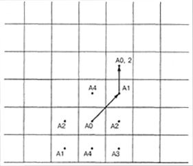 а) «конь в
плоскости» 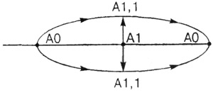 [АО—АО] —
плоскость А1,1; А1,2 —
объемные копии точки А1 б) «конь в
объеме» Рис. 5 «Вылетая» из
плоскости точки АО под давлением отталкивания, конь тут же захватывается
притяжением и опускается в точку «А02». Самое здесь главное и побочное явление
— рождение ОБЪЕМНОЙ ТОЧКИ (А1 — А 1,1 — А 1,2). Повторим ещё раз — испытывая на
прочность движение в одном направлении, система неожиданно рождает объём. Но
здесь — конь, так же как и слон, ферзь, ладья, король, способен лишь двигаться
во всех направлениях сразу! Или — ни в одном. Он ещё не может отделить, выбрать
одно направление из всех возможных, которыми обладает (см. рис. 6). Появляется
опыт неоднозначного опыта, хотели одно — получили другое. Была
плоскость — появился объём. Двигались с одной целью — Пришли к другой. Но —
старая цель не достигнута. Значит, новое, что получили, не рассматривается как
итог опыта. Возможности выбрать одно направление из всех по-прежнему нет. Это
факт. Он порождает в системе ПАМЯТЬ! Получив не то, что хотела, система
вынуждена вспомнить (какие всё-таки живые у вас схемы и формулы! – Т.В.)
короля, вернуться к королю и начать с ним Новый эксперимент! Что было, когда
рождался конь? Мы наблюдали СЛИЯНИЕ направлений движения короля. Это привело к
противоположному — мы вышли из плоскости в объём. Значит, новым будет
противоположный опыт — не слияние, а РАЗДЕЛЕНИЕ направлений движения короля.
Именно это теперь фокусируется в прицеле развития определения точки, нагнетая
её и совершенствуя. Так появляется сила «пешка» (см. рис. 7).- (Похоже, что сам автор руководит поисками систем в нужном
направлении? – Т.В.) 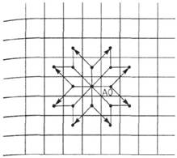 а) Способ
движения коня во всех направлениях пространства 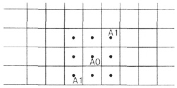
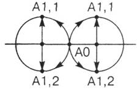 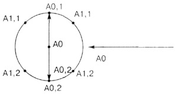 б) Появление
сферы — нового состояния точки АО Тут уже
активный оппонент из третьего «б» класса школы мастеров должен возразить: а
почему собственно система пошла по пути слияния, а потом вышла на разделение
сил короля? Может, она сразу вышла на пешку, и конь уже умер, не успев
родиться? Тогда конь есть искусственная сила человека, но не логической
системы? Но шахматы
безупречны. Мы в этом еще убедимся не один раз. Дело в том, что наша система
здесь познает опыт СВЕДЕНИЯ многих к одному. У короля четыре направления движения.
Он должен выбрать одно. Свести все свои возможности до одного усилия — сделать
один шаг в КОНКРЕТНОМ направлении. Система идет кратчайшим путем. Легче свести
через слияние. Так и появился побочный результат — фигура конь.... Вернемся к
нашей пешке. В ней уже совершенно отчетливо проявляется логика защиты и
нападения. Понятие «одно направление» идентифицируется с понятием «одна
противоположность». Возможность уничтожить иное перерастает в пространственную
организацию возможности движения как «С» целью, так и «НЕ» с целью уничтожить
иное. В результате пешка продолжает модифицироваться (см. рис. 7 в). 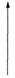 а) Движение
НЕ с целью 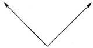 б) Движение
с целью 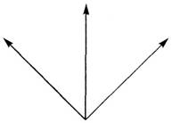 в)
Совокупный способ движения пешки Рис. 7.
Рождение пешки Пока,
система получила (у автора! – Т.В.) всё, что могла. Появилось простое
количество (слон, ладья, ферзь). Система познала конечность движения в единицу
импульса притяжения и отталкивания (шаг короля). Зародилось общее направление
движения в единицу импульса как простой синтез направлений движения предыдущих
сил (способ движения коня). Вместе с этим побочным продуктом произошел опыт
познания объёмности пространства (выход коня из плоскости во время движения).
Появился опыт движения в одном направлении, в синтезе с логикой
целенаправленного движения (движение пешки с целью и не с целью уничтожить
иное). НО, при всём этом, конечность единичного не уравновешивается конечностью
общего. Силы типа ферзь, ладья, слон, конь, король, пешка — уходят в
бесконечность, утверждая бесконечность пространства взаимодействия, бесконечность
нашей точки. При всём этом, все зародившиеся типы сил притяжения и отталкивания
(на нашем языке — шахматные фигуры) находятся в первородных копиях точки АО и «импульсивно
растекаются» из неё, автоматически выполняя свою работу, т. е. осуществляя
движение присущими им способами. Конечный шаг фигуры не наталкивается на
конечность пространства, по которому фигура шагает. 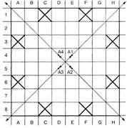 Рис. 8.
Появление границы пространства И «вдруг»
система, а вслед за ней и мы, выясняет, что в пространстве находятся точки, которых
не может достичь ни одна из имеющихся фигур в ЕДЕНИЦУ ИМПУЛЬСА ДВИЖЕНИЯ, т. е.
за один ход из центра доски (см. рис. 8 а)! Как бы мы ни старались, какую бы фигуру не
испытывали, мы не сможем попасть за одно движение фигуры из квадратов Е4, Д4,
Е5, Д5 в квадраты С1, A3, А6,С8, F8, Н6, НЗ!!! 3. Определение количества 3.1. Масса Мы смогли
убедиться, что хорошо известная геометрия шахмат таит в себе глубинное
логико-пространственное определение притяжения и отталкивания. На этом определение
системы не заканчивается! Напротив, полученный нами подход позволяет
рассмотреть более точные оценки системы. (Е5 .. Е8,
Е5 .. Е1, Е5 .. Н5, Е5 .. А5). В сумме, излучаясь из точки Е5 по всем
направлениям своего движения, ладья может накопить в своем опыте 14 импульсов
ДАВЛЕНИЯ на пространство! Вспомним, что точка Е5 — лишь одна из четырёх
первородных копий точки АО. Значит, масса давления ладьи на пространство
увеличится в четыре раза. Одновременно
с ладьей такой опыт проделывают все фигуры присущими им способами движения. В
результате, фигуры получают следующие простые оценки количества их движения по
пространтсву из центра во время определения меры, в момент собственного
рождения: пешка — 12 Мы можем
проверить это, проведя рутинную работу — подсчитывая количество ходов фигуры из
центральных квадратов доски во всех её направлениях. Данный опыт превращается в
закономерность, а мы можем зафиксировать его в виде формулы МАССЫ (М) фигуры: 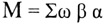 где: 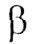 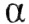 Таким
образом, после появления конечного рабочего пространства фигуры приобретают
массу — количество давления на пространство. Это их внутренние, первородные
оценки, появившееся в момент определения качества системы. Вместе с этим приобретает
массу и само пространство. Совершенно
очевидно, при определении массы фигур одни из них достигают одних квадратов
пространства, другие — других. Поскольку опыт повторяется из каждой копии точки
АО, неравномерность давления на пространство усиливается. Данный опыт
заключается в накоплении ЭЛАСТИЧНОСТИ отдельного квадрата к давлению на него со
стороны фигур. Если в квадрат А1 сумели войти лишь слон и ферзь из точек Д4,
Е5, то квадрат приобретает адекватный «иммунитет» к давлению данных фигур,
обладающих данной массой. Оттого квадрат сам приобретает массу — количество
движения фигур, к которому он безразличен будет в дальнейшем, — т.к. познал его
сейчас, в момент своего рождения. Таким образом, мы можем определить массу
квадрата (Мр) по формуле: 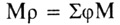 где: 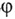 М — масса
этих фигур 3.2. Появление исходной позиции После
появления количественных оценок фигур, их массы и массы квадратов пространства,
появляется исходная позиция, — где
логика, пространственная организация и количественная природа дают новый
уровень меры данной системы, что позже вплотную подведёт нас к оценке её
энергетики. Но — обо вёем
по порядку изложения логики, — которая взрывается сама по себе и сразу. Однажды
мы уже смогли наблюдать, как единичный элемент — пешка впитал в себя единство
противоречивой логической природы шахмат (движение с целью и не с целью взять
фигуру). Сейчас система уже полностью определила все свои простейшие
количественные показатели, которые вновь оплодотворяются качеством. Цель, до
этого сосредоточенная в базовом элементе системы, пешке — растекается на все
фигуры. Каждая из них изнутри разрывается на противоположности: на белый и чёрный
цвет. Появляется иное, которое необходимо конкретно уничтожить. Но — при этом
сложилась конкретная пространственная структура! Логические противоположности
должны её адекватно отразить. Ранее мы видели, что пешка получает в свой багаж
способ передвижения в одном направлении — навстречу своей противоположности.
Сейчас пешка разделяется на белый и чёрный цвет, и уже не может находиться в
центре пространства. Наполненные целью развития — защитой и нападением, пешки
белого и чёрного цветов вынуждены проявить свою природу в пространственной
динамике. Защита всей системы вынуждает одну её пешку обнаружить в себе защиту.
Пространственно — это означает удалиться от противоположности на максимально возможное
расстояние. Самым длинным отрезком здесь становится диагональ — значит, пешки
располагаются в точках А1 и Н8. Пока перед нами — две конкретные пешки. Но
защита и нападение, в них сосредоточенные, требуют равномерного проявления на
всём пространстве. Поэтому, вместе с разделением пешек на белый и чёрный цвета,
происходит копирование (клонирование — более модное слово) пешек одного цвета
до заполнения ими пространства с максимальным удалением друг от друга пешек
противоположного цвета (см. рис. 9). 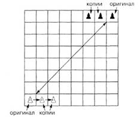 Рис. 9 Заметим, что
пока пешки заполняют последнюю линию доски. Но это продолжается недолго, т. к.
в дело вступают тяжёлые фигуры. В первую очередь, формирование их позиции зависит
от того, насколько защищённым окажется король (что именно ЭТО король, мы
докажем в другой публикации — дай Б-г, будет время! Сейчас примите на веру,
что уже в данной точке реализации логика распознает короля как центральную
фигуру защиты и нападения). Равновесие
между защитой и нападением руководит опытом и в данном случае. Поэтому,
совершенно очевидно для нас, после определенного количества экспериментов
внутри логики, король, рано или поздно устанавливается в центре доски (см. рис.
10). 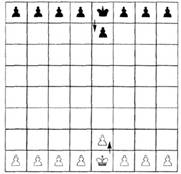 Рис. 10. После того
как король определил позицию в центре, уже не может не сформироваться хорошо
известная исходная позиция всех фигур. Мы знаем, что король находится по правую руку
от ферзя. Это интересно лишь нам, страдающим правосторонней симметрией. Для
логики — совершенно правомерно могло быть и наоборот. Но — не это важно!
Решающее здесь то, что пешки начинают вытесняться с последней линии доски. Для
них главное — отсутствие «посторонних предметов» на кратчайшем пути к
противоположности, и более того — пешки добавляют защиты своему королю. Далее в игру
вступают ладья, слон и конь. Они копируют себя до равномерного заполнения
пространства. Затем — находят себе исходные позиции в соответствии со своей
массой. Комбинируя
как угодно, мы рано или поздно признаем, что именно общеизвестная исходная
позиция этих фигур приводит к равномерному заполнению ими исходной позиции: ладья + конь
+ слон + ферзь + король + слон + конь + ладья 56 + 32 + 52
+ 108 + 32 + 52 + 32 + 56 140 = 140 =
140 Создавая в центре
140 единиц давления на пространство, ферзь и король окружены по флангам таким
же давлением, что приводит к равномерности напряжения по всей линии их исходной
позиции. Отдельным
вопросом является доказательство именно такого порядка расположения ладьи, коня
и слона. Однако — несложно понять, что иные комбинации их исходной позиции
(например, порядок «ладья — слон — конь») приводят к неравномерному давлению по
линии исходной позиции. Приближение
ладьи и слона даёт сгусток давления в 56 + 52 единицы, которому
противопоставляется 108 единиц давления ферзя. Вроде бы, сохраняется баланс, —
но слишком уж резок скачок в давлении на позиции коня, вес которого всего 32
единицы. 3.3. Энергия фигур Итак, фигуры
получили массу и определились «географически». Их качество становится все более
совершенным и сложным. Продолжая представлять собой лишь «сгустки» сил
притяжения и отталкивания, фигуры получают собственную энергию развития. Толчок
к рождению этой энергии даёт опять простая, базовая пешка. Находясь на
своей исходной позиции, пешка «вдруг» обнаруживает, что количество движения
стало КОНЕЧНЫМ, заранее предопределенным! Пешка может
передвигаться лишь навстречу противнику, и в состоянии сделать всего ШЕСТЬ
ходов, как бы мы ни экспериментировали с ней. Это есть ПУТЬ пешки, линия
движения, состоящая из шести точек. Партия в целом, на протяжении которой
защита и нападение приходят в противоречие — единица времени. Таким образом,
пешка получает собственную скорость: Сп. = со /
т (3) где: Сп. —
скорость пешки; со — путь
пешки т —
время т = 1, т. е. одной партии, внутри которой пешка делает свои шесть ходов. Но — тяжелая
фигура противника должна иметь возможность на каждое движение пешки ответить
своим движением, чтобы защита-нападение приходили в логическое равновесие.
Независимо от мощности фигур или ума игроков, просто в силу простейшей логики:
«защита-нападение, предложение-ответ». Таким
образом, путь тяжелой фигуры становится равным пути пешки и составляет ШЕСТЬ
ходов, шесть точек на линии движения. Конечно, ферзь за один ход может покрыть
большее пространство, чем пешка, но это пока не играет роли. Он имеет на своей
линии «жизни» шесть точек по типу «ход пешки — ход ферзя». Иными словами: С т.ф. = С п. (4) где: С т.ф.
— скорость тяжелой фигуры. Однако, этой
фигуре противника противопоставлена наша тяжелая фигура, которая должна суметь
дать ответ уже не только пешке, но и тяжелой фигуре. Тогда, в свою очередь,
первая тяжелая фигура должна противопоставить фигуре противника новый запас
ходов — адекватный. Иначе получится, что: С т.ф. = С
п.-----► С т.ф.п. = С т.ф. + С п. и: С т.ф.
меньше С т.ф.п., где С т.ф.п.
— скорость тяжёлой фигуры противника. Таким образом,
скорость тяжелой фигуры, её количество, становится неопределённым. Но система
уже определила количество пространства и фигур, их массу! При этом появился и
базовый элемент — пешка, скорость которой конечна, определённа. Поэтому — здесь
происходит ЛОГИЧЕСКИЙ СБРОС неопределённого количества по отношению к определённому
количеству пешки. Простое количество (суммирование) переходит в сложное: в
СТЕПЕНЬ, и скорость тяжелой фигуры теперь определяется как скорость пешки в
КВАДРАТЕ: С т.ф. = С п.2 (5) Итак, мы
определили скорость фигуры. Однако, ранее мы видели, что фигуры обладают
массой! А что такое масса здесь? Это количество точек движения «внутри фигуры»,
внутренне присущая характеристика её давления на пространство, зародившееся в
момент рождения этой фигуры. 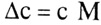 где: 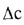 Для пешки: (7) Для тяжелой
фигуры: 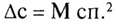 Но такое
приращение скорости на массу и есть энергия ( 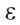 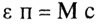 Для тяжелой
фигуры: 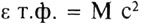 Здесь
— суммарный запас энергии на всю партию 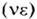 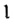 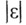 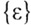 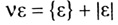 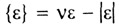 Вокруг
— рабочей энергии и разворачивается главная внутренняя борьба шахмат, пока
шахматист разглядывает пешки снаружи... Таким
образом, исходя из представленной концепции массы и энергии, можно построить
алгоритм компьютерной шахматной программы, где нападение и взятие фигур,
достижение цели игры основано на присвоении энергии фигур противника. Поскольку
пространство имеет собственную массу и энергию, а фигуры по ходу игры
осуществляют на него давление, — это также отражается в алгоритме. При этом,
следует исходить из того, что белые фигуры СЖИМАЮТ пространство, черные -
РАСШИРЯЮТ его (см. рис. 11, рис. 12): появляются точки чрезмерного напряжения
пространства. Целью игры с точки зрения компьютера становится поиск таких
точек, создаваемых фигурами противника, и задание собственного напряжения. В
этом случае кратчайший, сильнейший ход можно обнаружить через математику,
расчеты напряжения пространства! И — отпадает необходимость закладывать в
компьютер весь архив сыгранных партий, — чтобы, из них перебирая, привести
позицию к лучшему решению. Теоретически... а — квадрат
«пуст» 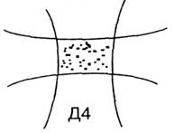 б — в
квадрат вошла белая фигура со своей массой — произошло сжатие пространства 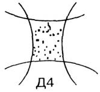 Рис. 11.
Сжатие пространства белой фигурой 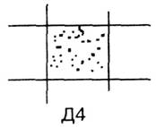 а — квадрат
Д4 до появления в нем черной фигуры 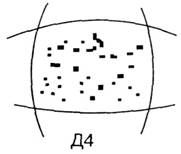 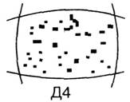 Рис. 12 Алгоритм,
основанный на расчёте напряжений пространства, массы и энергии фигур,
становится, очевидно, единственным решением при переводе на компьютер игры в
шахматы по НОВЫМ ПРАВИЛАМ. Ведь — в этом случае традиционные алгоритмы,
основанные на переборе, анализе архива, не работают — нам нечего «вставить» в
тупую машину... Что же, ждать сто лет, пока спортивный мир, во-первых, новые
примет правила, а, во-вторых, сыграет по этим новым правилам сотни тысяч
партий? Как показывают исследования, времени остаётся все меньше и меньше...
Мир, цивилизация, природа стоит на пороге КАЧЕСТВЕННОГО СКАЧКА. Нами
разработана модель скачка на основе шахмат, которая как раз и выражается на
поверхности явлений в новых правилах игры. Надеемся, ещё у нас будет
возможность изложить полученные результаты. Здесь перейдем к другому ключевому
моменту работы — к содержанию шахматной игры с точки зрения глобальной логики. 4. Содержание игры Мы дали
сжатое определение шахмат как логической системы (см. п.1). Уже тогда заявили
об их трансформации в модель развития вселенной. Далее, мы рассмотрели процесс рождения
фигур, их массы и энергии из эфемерных сил притяжения и отталкивания. Модель
вселенной на основе шахмат, уже в рамках этой немногословной статьи, становится
всё более детальной. Для нас
фигура — это сгусток противоречия между защитой и нападением. Точнее — сгусток
РЕФЛЕКСИИ, ОСОЗНАНИЯ того, что простое притяжение есть нападение, а безликое
отталкивание — защита. Это сознание не привязано к чьей-то голове, или какой-то
форме жизни. Данный сгусток стоит вне материи, над материей, перед материей (мы
можем назвать его Абсолютным Духом, Мировым Разумом или как-нибудь ещё, чтобы
вызывать хоть какую-то ассоциацию. Проще всего называется в шахматах — «ладья»,
король», «слон» и т.д.). Такие фигуры перемещаются по вселенной,
захватывая собой всё, что находится на пути. Ход ладьей, например, есть простое перемещение
сгустка сознания защиты-нападения. Все формы материи по ходу движения
ладьи наполнятся осознанием защиты и нападения и включатся в глобальную
шахматную партию, содержанием которой является развитие вселенной. Если
это «белая» ладья, то на поверхности явлений такой ход будет выражаться в
СЖАТИИ материи по линии движения ладьи. Форм сжатия много — от слияния двух
молекул до коллапса отдельной области пространства. Если же пришла в движение
чёрная ладья, она оставит на своем пути след — РАСШИРЕНИЕ материи (см. рис. 11,
12) — во всех формах проявления, по всей своей линии движения. Таким образом,
логика развития вселенной проста: от «чистого бытия» и «ничто» Гегеля — к
притяжению-отталкиванию, к осознанным защите-нападению, и через них — к
расширению-сжатию: реальному развитию. Такой, внешне агрессивный характер
развития вселенной (речь о защите и нападении, и демагоги могут нас обвинять в
чем угодно!), приводит к позитивным результатам — рождению НОВОГО. На месте
двух разрушенных молекул появится новая, чёрная дыра выбросит из себя новую
порцию вещества и т.д. Поскольку, что бы ни происходило — расширение или
сжатие, результат один: рождение следующих форм материи. Но — эту область
философии оставим для пуритан и пацифистов... Здесь для нас более важно сделать
следующее предположение: допустим, на пути движения этой глобальной ладьи
стоит, живёт и развивается разумная цивилизация. Допустим, она видит, что
логика развития в данной партии требует хода ладьи, которая пройдет через эту
область вселенной, по ходу движения произведет сжатие материи и пространства и
походя разрушит цивилизацию. Тогда единственный шанс — перевести энергию сжатия
в другую часть вселенной. Вынудить вселенную сделать другой
ход. Например, доставить и взорвать заряд в другой области пространства и этим
перевести энергетический поток сжатия в другое направление. Внешне это будет выглядеть как
альтернативный ход — «ферзем», например. Точные расчеты позиции фигур,
допустим, показывают, что искусственное сжатие пространства (термоядерный
взрыв) необходимо произвести в нашей солнечной системе. Тогда что остается нам?
Попытаться организовать защиту и не дать возможности сместить поток сжатия в
нашу область? — Фантазия? Эта цивилизация намного мощнее нас? Но всё, что
включено в рабочую область глобальной шахматной игры сегодня, находится на
одном уровне развития. Если некто, чтобы выжить, должен будет уничтожить нас, —
значит, мы будем способны (технически и теоретически) организовать защиту ради
собственного выживания. Может быть, это наступит завтра, — но сегодня уже
начинается борьба. Для начала — внутри наших стереотипов. Первой промежуточной
победой для нас будет ОСОЗНАНИЕ себя ЧАСТЬЮ ГЛОБАЛЬНОГО ПРОТИВОРЕЧИЯ МЕЖДУ
ЗАЩИТОЙ И НАПАДЕНИЕМ ВСЕЛЕННОЙ.
------- Детали можно
изучить — инструмент нам дан. ЭТО — ПРОСТЫЕ, ДЕРЕВЯННЫЕ ШАХМАТЫ... Примечание редактора сайта: статья Афанасьева взята из книги Юдасина
«Тысячелетний миф шахмат» - М, 2004, 606 с. См. мою рецензию на статью Афанасьева - «Шахматы на перепутье или наука за гранью
фантастики» в разделе Наши рецензии. |
|
|
|